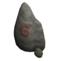

The Basics
The basics of Roleplaying and Terminology

Forsooth dear fellow, I dost not knoweth what thine "Str Level" is! Ye speak madness!
What is Roleplaying?
Terminology
Being "In-Character"
Respectful RP
What IS Roleplaying? Roleplaying is a simple activity, but one that can provide an endless amounts of entertainment.
Roleplaying is simply "playing a role". It means to create a "character" that fits in with the world around you and then to play out that character.
It's like acting but with more dragons. Roleplaying has been around forever and if you've ever played "pretend" as a kid then you've done some Roleplaying before.
Whether you've pretended to be a Soldier, a Knight, a Princess or a Spy you've engaged in the basic idea of Roleplaying; the idea of creating another persona.
---
With regards to RuneScape; Roleplaying is the act of pretending you are a *character* who fits into the world of RuneScape.
You stop being Josh/Chloe who plays Runekilla889 and grinds Attack experience. Instead you are "Ceric" or "Ayania", a skilled Hunter or perhaps a wily thief who gets caught up in fantastic adventures or is simply looking to make a bit of bonus gold.
You stop asking people about how much XP they need for their next and ask them how their training in swordplay goes, or if they have heard the rumours of undead trying to cross the River Salve.
RuneScape is a world full of character and lore and gives you a lot of opportunities to make your own fantastic adventures with friends, rather than waiting for the next quest or grinding some XP.

 Back to Contents
Back to Contents
Terminology When you see people in World 42 (The Roleplaying Server) or here in the Forums, you might find them using a ton of unusual acronyms or putting double brackets around everything they say; ((like this)).
What does it all mean?
This brief guide should introduce you to the basic terminology used by Roleplayers.
---
OOC: "Out of Character". This is often used to refer to a time when somebody is talking as themselves, instead of as their character. This is often represented by using double brackets for example;
(( Hey guys what CC should we join for this? ))
You should try and make it clear when you are talking OOC to avoid confusing everybody.
RP; "Roleplaying". Simply the shorthand way of saying Roleplaying.
IC: "In Character". Pretty much the opposite of OOC, IC refers to when somebody is speaking as their character and not as themselves. People assume this is how you are speaking by default. An example of how it is used might be;
(( Hey Josh did you just say that IC or not? I couldn't tell...))
Godmodding: "God Mode/God Modding". This is when a player is roleplaying an obscenely powerful character who cannot be hurt and instantly kill anybody. It's generally seen as a very newbish and rude thing to do.
GM/DM: "Game Master/Dungeon Master". These terms were coined in the days of Tabletop Roleplaying like Dungeons & Dragons. They generally refer to the person(s) running the RP and controlling events. Often they are allowed to do things normal players aren't to progress the story (if there is one).
Bio: "Biography". Generally this refers to a post on the forums that details your character. Not every RP needs one, but some may ask for one as a requirement to join. Often they provide a template for you to fill out details about your character.
Autohit: "Automatically Hitting". If somebody fights you in a Roleplay and never lets you defend yourself, or similar, then they are guilty of "Autohitting". Like Godmodding it's looked down upon.
*words in asterisks*: Words in asterisks usually indication an action. For example a player may type;
*opens their pack and retrieves a scroll*
This is a way of performing actions the game won't let you perform normally.
-words in dashes-: Not commonly used but can be used to indicate a character's thoughts. For example;
-Hmm, it seems that this stranger has more to him than meets the eye-
Back to Contents
Being "In Character" Roleplaying means to immerse yourself in the world around you, in this case the Fantasy world of RuneScape.
Somebody who is part of the RuneScape world wouldn't know what TV is, or what "levels" are. They don't talk in leetspeak or chat about their favourite movies.
That stuff is what non-RP worlds are for, or are reserved for "OOC" chat.
Likewise, when roleplaying you are playing out the persona you have created.
If you want to roleplay as a big, tough, gruff, Fremmennik Barbarian, you probably aren't going to go around wearing bunny ears asking if anybody knows where to buy some pink ribbon.
You would act as you think a big, tough, gruss Fremmennik Barbarian would.
It's helpful to think about things like;
What does your character know and what do they not know? For example, a simple farmer probably won't know about the plots of Lucien. A Druid of Taverly isn't going to know much about Dwarven cannons or commanding armies.
How does your character react to certain situations? A common pickpocket isn't going to bravely rush into a fight against an armoured knight. A good-hearted Knight of Saradomin isn't going to push over a begger and laugh at them.
Roleplaying is all about fun, but a lot of that fun comes from playing your character and developing them as a person. It's about immersing yourself in the world and forgetting about the "real world stuff" for a little bit.

Back to Contents
Respectful Roleplaying It's very easy to have giggle a bit when somebody is roleplaying a serious character, or to try and boss everybody around by pretending you're unkillable/something ridiculous. But none of that is going to help you make any friends and you might find that nobody wants to RP with you.
Roleplaying is a social activity and that's why it's important to be respectful. It's a community thing after all and it's more enjoyable when everybody is nice to each other.
Here are some little "reminders" about being respectful when RPing
We all have to start somewhere Everybody was a newbie once and you shouldn't look down on people who are just trying Roleplaying out. Help them, answer their questions and involve them in what you are doing. If you make it enjoyable for that person, they will be more inclined to come back and improve.
Respect the RP/GM/Thread If you join an RP group, or an in-game adventure, or a forum thread; you should always respect those who have taken the time to run it and their intent. If a group isn't for you, politely leave and find one that is more suited to you.
A good critic is a polite critic Not everybody wants your opinion, but if they do ask for it try to be as constructive and polite as possible. If you think an RP stinks then politely leave and join another, or speak to the owner and offers some ideas politely.
Do your best with spelling and grammar, don't lay into those whose best isn't the same as yours Not everybody is Shakespeare and they may not always use the best spelling and grammar. Try and get helpful pointers but don't belittle them for it.
Likewise, if you know your spelling and grammar isn't great still try your best. It makes things clearer for everybody and they will appreciate the effort. Don't be lazy and expect people to understand you.
The GM/Thread Owner has the final call If a disagreement appears, the GM/thread owner gets the final say and you should respect that. That's just to keep things running smoothly and in line with the story.
But if you are the GM/Thread owner pay close attention to the next point...
Don't abuse your position! If you're running an RP group or Thread, don't abuse your position! Be fair with your players and they will be fair with you.
-----
This final one is something which I think can make a big difference with Roleplaying and I heartily encourage you to think about it;
A good RP shouldn't be a competition. A good GM isn't the enemy. Roleplaying is a co-operative hobby and it's best when you get to work as a team to tell an awesome story. Of course there are times when the GM will need to put challenges and obstacles in your way but these are to make it exciting and interesting, never forget that we're all doing this for fun and as a team.
Back to Contents Back to the first page


")


 Code of Conduct
Code of Conduct Sticky
Sticky Locked
Locked Refresh
Refresh Mod�Mark�H
Mod�Mark�H
")